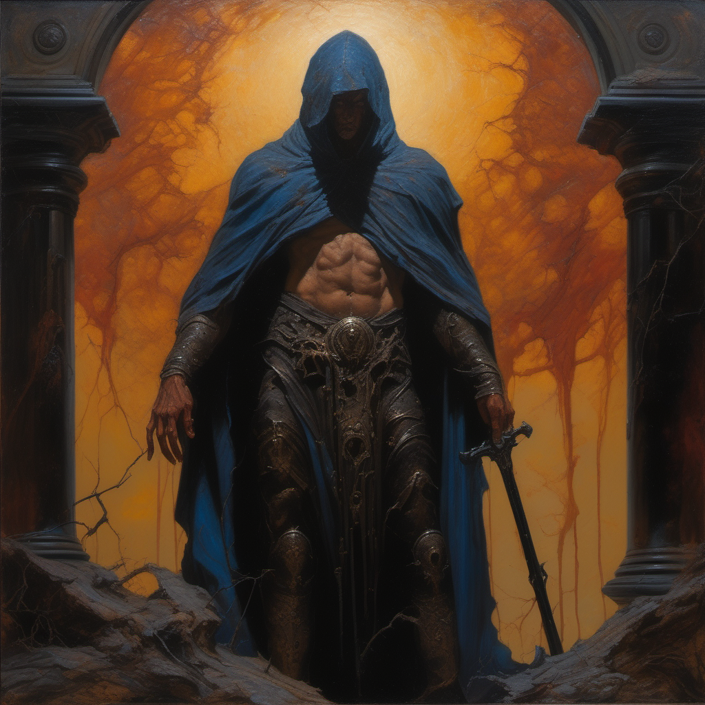
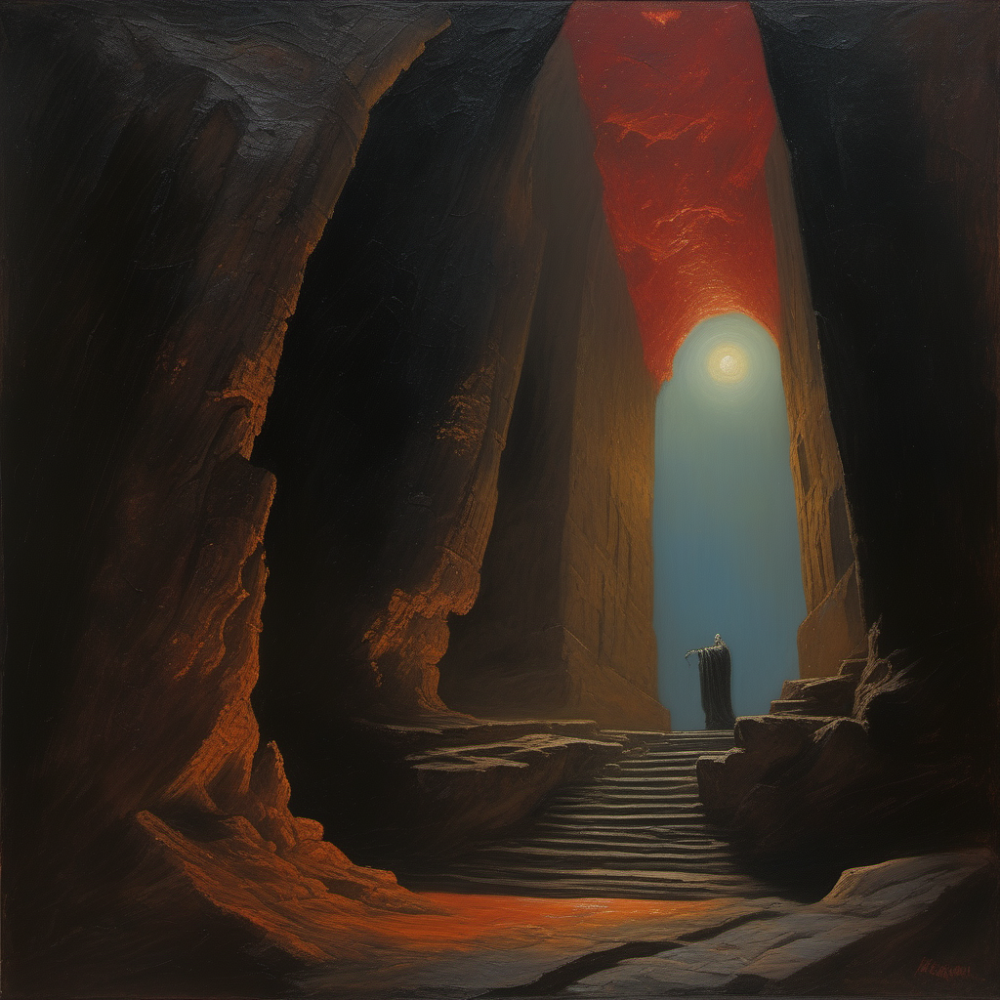
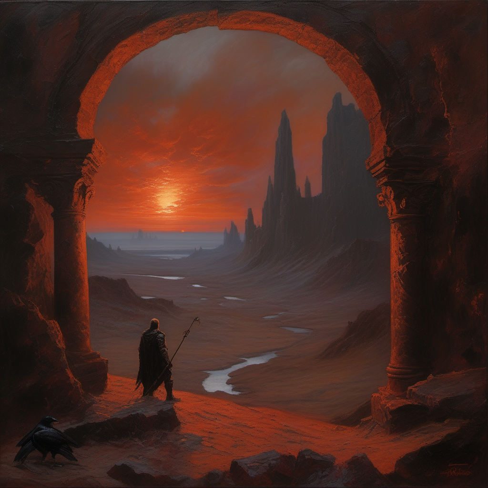

RAVEN REBORN — KEY VISUAL
「死んだ神の最後の大陸」— 深淵降下のキービジュアル候補3案

A: 崩壊大聖堂
— 砕けたステンドグラスから差す最後の陽光。足元に露出した神の肋骨。下から赤い光。

B: 深淵への螺旋
— 神の体内を降下する螺旋階段。上に最後の太陽光、下に赤い闇。有機的な壁面。

C: 世界の果て
— 死にゆく赤い太陽。崩壊したアーチ門。足元が割れて神の体内への入口が開く。